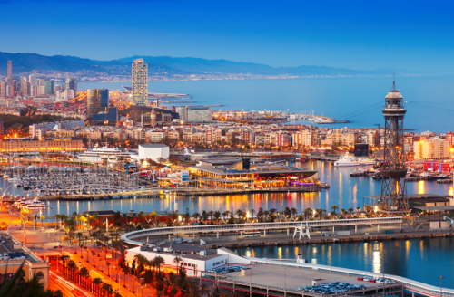

BARCELONA
Barcelona is the capital of the autonomous community of Catalonia in the Kingdom of Spain. It is the sixth-most populos urban area, after Paris, London, Madrid, the Ruhr area and Milan. Founded as a Roman City, in the Middle Ages Barcelona became the capital of the County of Barcelona. Barcelona is one of the world's leading tourist, economic, trade fair, and cultural centers, and its influcence in commerce, education, entertainment, media, fashion, science and the arts.
Barcelona is located on the northeast corner of the Iberian Peninsula. Barcelona won the 1999 RIBA Royal Gold Medal for its architechure, the first and only time that the winner has been a city rather than an individual architect. Barcelona contains seven beaches, totalling 2.8 miles of coastline.